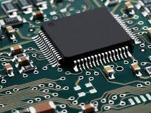

Rohan Pareek
About me
"Do or Do not. There is no try."
I am Rohan Pareek, a 3/4 engineer who now wants to work for an organisation where he can grow as an individual and a professional.
I am an enthusiastic learner and always up for new challenges. I am a hard worker and a team player with a strong sense of responsibility.
As Geet from Jab We Met said ' Aap convince ho gaye ya main aur bolu?'. And also if you need one more reason...look at me...you can't reject this face...ha ha...just kidding. On a serious note I hope to be a strong asset to the company in future while growing with it.
Postion of Responsiblity
- Committee Head - Aaruush 17
- Event Coordinator - Aaruush 16
- Volunteer - Aaruush 15

Projects and Internships
- Solar Tracking Rover
- GSM based security system
- Internship at Hindustan Zinc LTD.
- Internship at BSNL
Skills
C, Python(elemntry),HTML(elementry) MS Office

Extra and Co curriculars
- SRM MUN18 – Sudan
- SRM MUN17 – Kingdom of Bahrain
- ‘I’ conference by Climber
- Volunteered for book donation drive organized by Initiative Fusion.